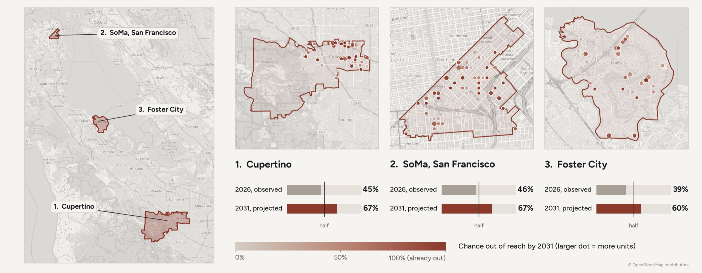

0.7% of clerical, customer support and frontline service jobs on Indeed could afford to rent a median Bay Area home. But salary isn’t the issue.
Pay rose and layoffs stayed rare, yet affordable listings nearly vanished. Even for ML and AI roles, the median salary affords rent in just 70% of Bay Area cities.
Pay rose, but affordable listings nearly vanished
Rental listings affordable on median pay, 2012 to 2026
- Customer support11.8% to 1.8%
- Clerical and admin8.3% to 1.3%
- Frontline service1.4% to 0.3%
A turnover resets the rent
California hard caps rent hikes at 10% a year, but the rule does not apply to vacant units. 71% of 2026 turnovers in San Francisco raised the rent faster than the cap.
When turnovers happen there, 20.7% of homes move from affordable to unaffordable for low-income renters.
The model: will this turnover push rent out of reach?
Gradient boosted trees score each home when its tenants leave. It predicts with 0.90 AUC, higher than any existing approach.
- Target
- Left reach: the next tenancy’s settled asking rent is above the 80% AMI limit (income at least 3× rent, household size bedrooms + 1). Of 17,993 homes re-listed 2022 to 2026, 12,010 were affordable before turnover and 2,274 were not after.
- Algorithm
- Gradient boosted trees (LightGBM), the standard on structured, tabular data and strong on non-linear relationships. 135 trees of 15 leaves.
- Features
- 63 features: rent, unit size, landlord, affordability, neighborhood income, age, past displacement and city job mix, joined per home.
- Split
- By time. Train to mid-2025 (4,061), tune on late 2025 (1,142), then score 2026 (6,807) once.
What the model leans on
Drop in test AUC when one feature group is shuffled.
- Headroom, 3How far below the line, growth needed to cross0.26
- Market, 7County rent index, ZIP turnover history0.030
- Tract, 19Census profile, displacement typology0.013
- Unit, 30Size, age, home type, landlord scale0.008
- City jobs, 4Share of AI-positioned and exposed postings0.002
- Our model0.900
- Urban Displacement Project at-risk map0.456
Flagging the same 20% of units, the model catches 913 of the 1,402 that left reach in 2026; the legal rule catches 818.
The Urban Displacement Project map ranks units worse than a coin flip: the rentals most at risk are the last affordable ones in wealthy neighborhoods.
Three neighborhoods predicted to be majority unaffordable by 2031


Limitation: the model underpredicts low-income neighborhoods

Affordable housing is becoming more rare and less affordable.
Workers who leave the Bay Area are hurt too
- Rent over half of income+16%
- Hour-long commutes+9.3%
- Annual wages−$26k
Use the model to predict at-risk buildings and buy them before they turn over. Programs like the Small Sites Program support these efforts.
Open the atlas